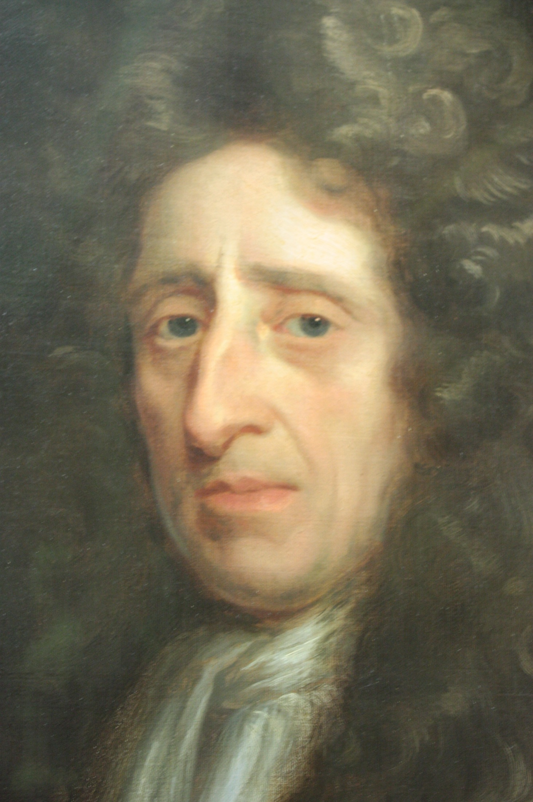
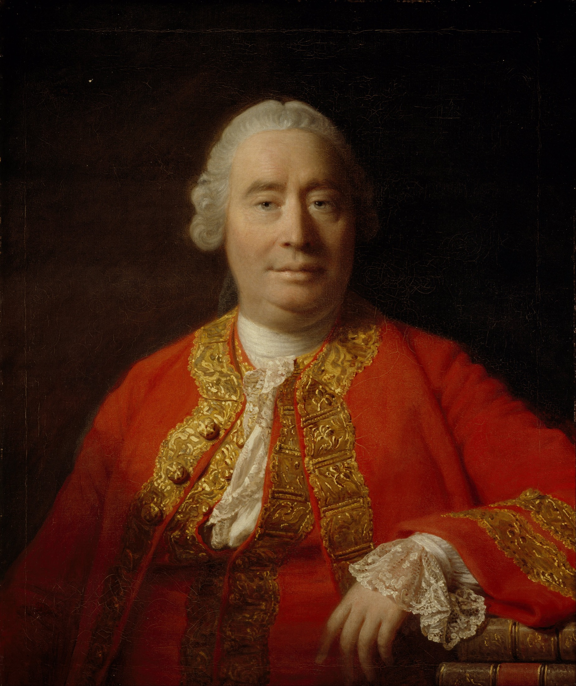
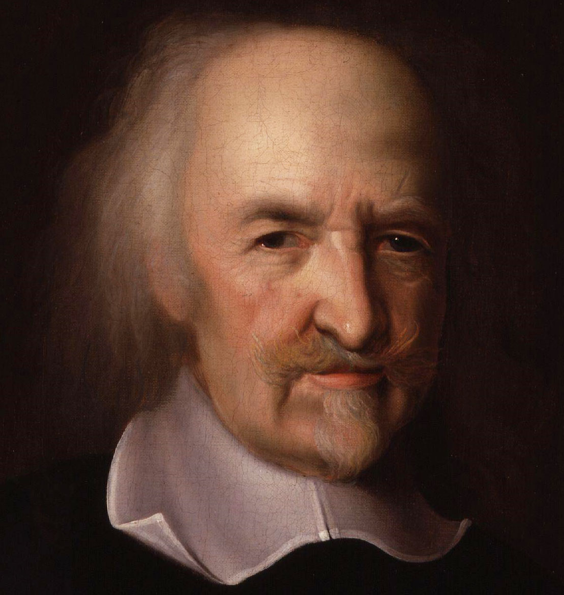

Tema 9 · El empirismo y el materialismo: Hume
Para entrar en el empirismo y el materialismo
Acabas de ver cómo Descartes refundaba el conocimiento sobre la razón y dividía la realidad en dos sustancias, la pensante y la extensa (§37). Este tema reúne las dos grandes réplicas que la propia Edad Moderna le opuso, cada una por un flanco distinto.
El mapa del tema. La primera réplica es el empirismo: una corriente de pensadores británicos que invierte el punto de partida cartesiano y hace de la experiencia, no de la razón, la fuente y el límite de todo saber. La recorreremos en su programa común y en sus dos primeros autores, Locke y Berkeley (§38), antes de detenernos en quien la lleva hasta el final, David Hume (1711-1776), con su crítica de la causalidad, la sustancia y el yo (§39). La segunda réplica es el materialismo: en lugar de multiplicar las sustancias, las reduce a una sola —la materia—, disolviendo el dualismo cartesiano de alma y cuerpo (§40). Dos caminos opuestos entre sí, pero unidos por un mismo gesto: poner en cuestión las certezas que el racionalismo daba por firmes.
§38 · Características generales del empirismo
De una misma pregunta a una respuesta opuesta. La filosofía moderna entera gira en torno a una pregunta: ¿de dónde procede nuestro conocimiento y hasta dónde podemos fiarnos de él? Ya viste cómo respondía el racionalismo: el verdadero conocimiento brota de la razón, que posee por sí misma ciertas verdades antes de toda experiencia y deduce de ellas el resto con la certeza del matemático (§34). El empirismo nace de invertir esa respuesta Tabla 8. Para los empiristas nada hay en el entendimiento que no haya entrado antes por los sentidos; la experiencia no es un trampolín que la razón pronto abandona, sino la fuente y, a la vez, el límite de todo lo que podemos saber. No forman una corriente homogénea —Locke, Berkeley y Hume discrepan en cuestiones de fondo—, pero comparten un mismo programa, y conviene fijar sus rasgos antes de entrar en Hume, que lo llevará hasta sus últimas consecuencias (§39).
Una tradición insular. No es casualidad que los nombres cambien de orilla. Frente a los grandes racionalistas continentales —Descartes en Francia, Spinoza en los Países Bajos, Leibniz en el mundo alemán—, el empirismo es sobre todo una tradición británica: el inglés John Locke (1632-1704), el irlandés George Berkeley (1685-1753) y el escocés David Hume, a quien dedicaremos la sección siguiente. Detrás de ellos respira el clima de la nueva ciencia: la insistencia de Francis Bacon en partir de la observación y el experimento, y el éxito arrollador de la física de Newton, que explicaba el cielo y la tierra sin necesidad de las verdades innatas que reclamaba Descartes (§33). Si la ciencia avanza mirando los hechos, ¿por qué habría de fundarse el conocimiento en otra cosa que en la experiencia?
Locke: la mente como hoja en blanco. El empirismo arranca con una tesis sobre el origen de nuestras ideas. Llamamos idea a todo contenido de la mente —una imagen, un concepto, un recuerdo—, a aquello que tenemos delante cuando pensamos. Pues bien: para John Locke, autor del Ensayo sobre el entendimiento humano (1690), todas nuestras ideas proceden de la experiencia, porque la mente al nacer es «un papel en blanco, sin caracteres ni idea alguna»1. Nada hay escrito en ella de antemano; toda la escritura la pone la experiencia, que mana de dos fuentes. La primera es la sensación, que nos llega del mundo exterior por los cinco sentidos: el color rojo, el sabor amargo, el calor del fuego. La segunda es la reflexión, una suerte de sentido interno con que la mente percibe sus propias operaciones: cuando advierto que dudo, que quiero o que recuerdo, obtengo por reflexión las ideas de duda, voluntad o memoria. Fuera de esas dos puertas no entra nada.

Con ese material la mente construye en dos niveles. Recibe primero, de manera pasiva, las ideas simples —no puede inventarlas ni rechazarlas: quien jamás ha probado una piña no logrará formarse su sabor por mucho que se lo describan—. Y a partir de ellas elabora luego, de manera activa, las ideas complejas, combinando, comparando y separando las simples: así forma la idea de un ejército a partir de la de muchos hombres, o la de Dios prolongando sin término las ideas de saber, poder y bondad que halla en sí misma. Por abstracta que parezca una idea, el empirista sostiene que, tirando del hilo, siempre desembocaremos en alguna experiencia: las ideas más altas no son sino simples recombinadas.
Locke introduce además una distinción destinada a larga vida. No todo lo que percibimos en un cuerpo está igualmente en él. Las cualidades primarias —la extensión, la figura, el movimiento, el número, la solidez— son inseparables del cuerpo, y nuestras ideas las copian tal como son: una manzana es realmente extensa y redonda. Las cualidades secundarias —el color, el sabor, el sonido, el calor— no están en las cosas como las sentimos, sino que son el poder que los cuerpos tienen, por la disposición de sus partes, de producir esas sensaciones en nosotros: la manzana no es «roja» en sí misma del modo en que se nos aparece; lo rojo es el efecto que provoca en un ojo como el nuestro. La realidad objetiva quedaba así, para Locke, del lado de las cualidades primarias —terreno de la física—, y lo demás del lado del sujeto que percibe. Conviene retener esta grieta: por ella entrará Berkeley.
Ni innatismo ni atajos: el criterio del origen. De la tesis lockeana se siguen un rechazo y un método. El rechazo es el de las ideas innatas: si la mente nace vacía, no puede traer consigo ni principios lógicos, ni la idea de Dios, ni los conceptos de la metafísica racionalista. Aquello que Descartes consideraba el cimiento más firme —ideas que la razón encuentra en sí misma (§36)— el empirista lo declara sin fundamento mientras no se muestre por qué puerta de los sentidos ha entrado2. El método es la otra cara de la moneda: para saber si un concepto tiene contenido real, hay que rastrear su origen y comprobar de qué experiencia procede. Frente a la deducción racionalista, que desciende de los primeros principios a sus consecuencias, el empirismo procede a la inversa, analizando cada idea hasta dar con la sensación que la engendró. Este criterio —una idea vale lo que vale la experiencia de la que nace— es el arma que Hume empuñará contra la metafísica (§39).
Berkeley: ser es ser percibido. El segundo empirista, el clérigo irlandés George Berkeley, tomó en serio el método hasta un extremo que escandalizó a sus contemporáneos. Su razonamiento parte de la grieta que dejó Locke. Si las cualidades secundarias —el color, el sabor— no están en las cosas, sino en quien las percibe, ¿qué nos autoriza a tratar de otro modo a las primarias? También la extensión y la figura las conocemos solo percibiéndolas; nadie ha tenido jamás la experiencia de una extensión que no fuera percibida. Berkeley borra entonces la distinción de Locke y arrastra todas las cualidades al lado del sujeto. Y da un paso más: detrás de las cualidades, ¿queda alguna materia, alguna sustancia corpórea que las sostenga? De esa materia nunca tenemos experiencia —solo percibimos colores, durezas, sonidos—, de modo que, según el propio criterio empirista, es una idea sin contenido, una palabra vacía. Su conclusión es el inmaterialismo: no existen cuerpos materiales independientes de toda mente; de las cosas sensibles, «ser es ser percibido» (esse est percipi). Existen en cuanto son percibidas.
¿Significa esto que el mundo se desvanece cuando cierro los ojos, o que la habitación deja de existir al salir de ella? Berkeley lo niega, y aquí asoma el sacerdote: las cosas siguen existiendo porque hay una mente infinita —Dios— que las percibe siempre, y en cuya percepción constante descansa el orden estable de la naturaleza. Lejos de ser un capricho, su idealismo es el empirismo aplicado sin concesiones a la noción de sustancia material: una vía muerta en la historia de la filosofía, sin apenas continuadores, pero indispensable para entender el camino, porque muestra adónde lleva el principio empirista cuando no se le pone freno. Berkeley había disuelto la sustancia material; quedaban en pie la sustancia espiritual, el yo y Dios. Hume se preguntará por qué detenerse ahí.
El alcance del conocimiento: del ideal de certeza al reino de lo probable. ¿Y hasta dónde llega, así fundado, nuestro saber? Aquí el empirismo paga el precio de su honestidad. El racionalismo aspiraba a un conocimiento del mundo universal y necesario, válido siempre y en todo lugar, como el de la geometría. Pero la experiencia no nos entrega necesidad: nos dice cómo han sido las cosas hasta ahora, no cómo tienen que ser forzosamente. El conocimiento de los hechos es, por ello, a posteriori —posterior a la experiencia, frente al saber a priori que la precede— y, en consecuencia, contingente y probable, nunca absolutamente cierto. Que el sol haya salido cada mañana no demuestra que mañana deba salir. El empirista renuncia entonces al gran sueño racionalista de una metafísica deducida con rigor matemático y rebaja la pretensión: del mundo solo conocemos lo que aparece a la experiencia —los fenómenos—, y de lo que pueda haber más allá de ella es más prudente callar.
De Locke a Hume. Locke había desmontado las ideas innatas y Berkeley la sustancia material, pero ninguno apuró del todo la lógica que habían puesto en marcha: el primero seguía admitiendo las sustancias —la material, la espiritual, Dios—, y el segundo, tras suprimir la materia, conservaba intactos el yo y Dios. El empirismo encerraba, sin embargo, una exigencia más radical. Si de veras todo nuestro conocimiento debe poder mostrarse en alguna experiencia, ¿qué ocurre con ideas tan capitales como la de sustancia, la de causa o la del propio yo, que parecen gobernar todo nuestro pensamiento y de las cuales, sin embargo, no tenemos experiencia directa alguna? Llevar esa pregunta hasta el final, sin retroceder ante sus consecuencias, será la tarea —y la audacia— de David Hume.
| Criterio | Racionalismo | Empirismo |
|---|---|---|
| Fuente del conocimiento | La razón: posee verdades antes de toda experiencia | La experiencia: sensación y reflexión; nada en la mente que no entre por los sentidos |
| Ideas innatas | Sí: son el cimiento del saber (§36) | No: la mente nace como «papel en blanco» (tabula rasa) |
| Método | Deducción: de los primeros principios a sus consecuencias, al modo matemático | Análisis: rastrear cada idea hasta la sensación que la engendró |
| Tipo de saber | A priori: universal y necesario, válido siempre | A posteriori: contingente y probable («el sol ha salido», no «debe salir») |
| Alcance | Aspira a una metafísica deducida con certeza | Solo los fenómenos; callar sobre lo que excede la experiencia |
| Representantes | Continentales: Descartes, Spinoza, Leibniz | Británicos: Locke, Berkeley, Hume |
§39 · David Hume: el origen del conocimiento y la crítica de la metafísica
El empirista que no se detuvo. David Hume (1711-1776), escocés de Edimburgo, es el más radical y el más consecuente de los empiristas. Escribió muy joven su obra mayor, el Tratado de la naturaleza humana (1739-1740), que pasó inadvertido —«cayó muerto al nacer de las prensas», recordaría con amargura—, y reelaboró después su núcleo en la más accesible Investigación sobre el entendimiento humano (1748). Su ambición era construir una «ciencia del hombre»: aplicar al estudio de la mente el mismo método de observación y experimento con que Newton había desentrañado los cielos. Y lo hizo con una honestidad implacable: tomó el criterio empirista —ninguna idea sin experiencia que la respalde— y lo aplicó, sin la prudencia de Locke ni los frenos teológicos de Berkeley, a los conceptos más venerados de la filosofía. El resultado fue una demolición de la que la metafísica tradicional no se ha repuesto.

Impresiones e ideas. Hume empieza ordenando el contenido de la mente, al que llama en conjunto percepciones, en dos clases que se distinguen por su fuerza y su viveza. Las impresiones son las percepciones intensas y originales: las sensaciones del momento —este rojo, este dolor— y las pasiones que sentimos. Las ideas son sus copias pálidas, las que manejamos al pensar, recordar o imaginar: la diferencia entre quemarse la mano y limitarse a recordar la quemadura mide la distancia entre una impresión y su idea. De ahí extrae Hume su principio rector, el principio de copia: toda idea simple es la copia de una impresión simple que la precede. Incluso las ideas que parecen inventadas se descomponen en impresiones previas —una «montaña de oro» no es más que la idea de oro y la de montaña, ambas vistas antes, soldadas por la imaginación—. Este principio se convierte en sus manos en una herramienta crítica de enorme filo: ante cualquier término sospechoso de no significar nada, basta con preguntar «¿de qué impresión procede esta idea?». Si no podemos señalar ninguna, la palabra está hueca, por solemne que suene3.
Relaciones de ideas y cuestiones de hecho. Todo aquello que podemos conocer cae, según Hume, en uno de dos cajones —una división tan tajante que se conoce como la horquilla de Hume—. De un lado, las relaciones de ideas: las verdades de la matemática y la lógica, que se saben con solo pensarlas, son necesarias y ciertas, y cuya negación es contradictoria —«tres por cinco es quince» lo es con independencia de que existan o no tríos de cosas en el mundo—. Se conocen a priori, pero precisamente por eso no nos dicen nada sobre lo que existe. Del otro lado, las cuestiones de hecho: lo que afirmamos sobre el mundo real. Son siempre a posteriori, dependen de la experiencia, y su negación nunca es contradictoria: que mañana salga el sol y que no salga son ambas perfectamente pensables. Aquí está todo lo que de veras nos importa saber —y aquí, también, donde el conocimiento deja de ser seguro—. Porque, ¿cómo razonamos sobre hechos que van más allá de lo que ahora percibimos o recordamos? Siempre, responde Hume, por medio de la relación de causa y efecto: si veo humo, infiero fuego; si oigo la llave, espero que se abra la puerta. Toda nuestra ciencia de la realidad descansa en esa relación. De modo que examinarla a fondo es examinar el fundamento mismo del conocimiento del mundo.
La crítica de la causalidad. ¿Qué hay realmente en una conexión causal? Tomemos una bola de billar que golpea a otra y la lanza a rodar. Cuando lo analizamos, ¿qué percibimos? Tres cosas: que las bolas están en contigüidad, que el movimiento de la primera precede al de la segunda, y que, siempre que en el pasado hemos visto el primer suceso, lo ha seguido el segundo —su conjunción constante—. Eso es todo lo que los sentidos entregan. Lo que en ningún momento percibimos es el ingrediente decisivo: el poder, la fuerza, la conexión necesaria por la que la causa obliga a producirse al efecto. Esa necesidad no está en las bolas. ¿De dónde sale, entonces, la idea? De nosotros mismos. Tras presenciar muchas veces la misma secuencia, la mente contrae un hábito, una costumbre, y al ver de nuevo la causa pasa por sí sola a esperar el efecto. La necesidad que creíamos ver en las cosas es, en verdad, esa transición habitual de la mente proyectada sobre el mundo. Causa y efecto no nombran un vínculo lógico ni un poder observado, sino una asociación que la repetición ha grabado en nosotros y que vivimos como creencia.
La consecuencia es vertiginosa. Todo razonamiento causal —y con él toda la física, toda predicción, toda la vida práctica— supone que el futuro se parecerá al pasado, que la naturaleza es uniforme. Pero ese supuesto no puede demostrarse: no es una relación de ideas, pues sin contradicción podemos imaginar que mañana las leyes cambien; y pretender probarlo por la experiencia sería dar por sentado lo que se quiere probar, ya que la experiencia solo habla del pasado. Nuestra confianza en las causas, base de toda ciencia, carece así de fundamento racional: se apoya solo en la costumbre. Y, sin embargo, Hume no es un escéptico que nos invite a dejar de creer —sabe que no podemos—: la costumbre es «la gran guía de la vida», y gracias a ella, no a la razón, seguimos viviendo y acertando. El escéptico en el conocimiento convive con el naturalista que describe, sin dramatismo, cómo funciona de hecho la mente humana.
La crítica de la sustancia y del yo. Armado con el principio de copia, Hume vuelve ahora contra los dos pilares de la metafísica. El primero es la sustancia. La filosofía la define como aquello que subsiste por sí y sostiene las cualidades. Pero ¿de qué impresión procede esa idea? De ninguna: de una manzana solo percibimos un color, una redondez, un olor y un sabor reunidos —nunca el supuesto soporte invisible que estaría «debajo» sujetándolos—. La sustancia es una ficción: el nombre que damos a un haz de cualidades que la costumbre nos ha acostumbrado a encontrar juntas. El segundo pilar es aún más íntimo: el yo. Descartes lo había hecho la roca de toda certeza (§36). Hume invita a buscarlo: vuélvete hacia dentro, dice, e intenta sorprender ese «yo» puro y permanente. No lo hallarás. Solo tropezarás con percepciones sueltas —un frío, una luz, un pensamiento, un deseo— que se suceden sin descanso. El yo no es una sustancia que tenga percepciones, sino el haz mismo de esas percepciones en flujo perpetuo. La mente, escribe, es «una especie de teatro» por el que desfilan las percepciones; pero hemos de quitarle al símil lo que tiene de engañoso, porque no hay escenario ni teatro alguno aparte de la propia función. Lo que llamamos identidad personal es otra ficción útil, tejida con la semejanza y el encadenamiento de las percepciones y cosida por la memoria.
Si caen la sustancia y el yo, cae con ellos el edificio entero de la metafísica, incluida la pretensión de demostrar por la razón la existencia de Dios o del alma, pues toda prueba de esa clase es un razonamiento causal que pretende ir más allá de toda experiencia posible —y eso, ya lo hemos visto, es ilegítimo—. Hume saca la conclusión con una imagen célebre: si recorremos las bibliotecas, deberíamos arrojar al fuego todo volumen de metafísica que no contenga ni razonamiento abstracto sobre cantidades y números ni razonamiento experimental sobre hechos, porque no encierra «sino sofistería e ilusión»4. El criterio empirista, aplicado sin pestañear, no deja en pie ni la sustancia, ni la necesidad causal, ni el yo.
La ley de Hume: del ser no se sigue el deber. El mismo rigor marca el límite de lo que la razón puede hacer también en la moral, y conviene retenerlo porque es una de las herencias más duraderas de Hume. Al leer a los moralistas, observa, se los ve pasar sin aviso de proposiciones unidas por «es» y «no es» a proposiciones unidas por «debe» y «no debe»; y ese cambio, que parece inocente, encierra un salto que nadie explica: de cómo son las cosas no se deduce, por pura lógica, cómo deben ser. Es la llamada ley de Hume —o guillotina de Hume—: ninguna cadena de hechos basta, por sí sola, para fundar un valor. La razón describe y calcula, pero no nos mueve a obrar ni dicta fines; eso corresponde al sentimiento. De ahí su formulación más provocadora: «la razón es, y solo debe ser, esclava de las pasiones». La moral no se demuestra como un teorema: se siente. Con ello Hume cierra el círculo de su empirismo, devolviendo también el deber al terreno de la experiencia —aquí, de la experiencia afectiva— y vedando a la razón el papel legislador que la tradición le había atribuido.
El despertar de Kant. Hume había llevado el empirismo a su conclusión coherente, y esa conclusión era inquietante: la ciencia, orgullo de la época, descansaba en la costumbre, no en la razón. Otra corriente de su siglo intentaría zanjar el debate metafísico moderno en dirección opuesta a la suya y a la de Descartes —no disolviendo las sustancias, sino reduciéndolo todo a una sola, la materia—: es el materialismo del que trataremos enseguida (§40). Pero la respuesta de mayor calado vendría de Alemania. Immanuel Kant confesaría que fue Hume quien lo «despertó de su sueño dogmático»: incapaz de aceptar que la causalidad fuera mera costumbre, pero incapaz también de refutar a Hume en su propio terreno, buscaría una tercera vía entre el racionalismo y el empirismo que rescatara la necesidad del conocimiento sin renunciar a la experiencia (§50). El problema que Hume dejó abierto —cómo es posible un conocimiento del mundo que sea a la vez necesario y aplicable a la experiencia— se convertiría así en el punto de partida de toda la filosofía posterior.
§40 · El materialismo moderno: de Hobbes a la Ilustración
Una respuesta opuesta al dualismo. Mientras Hume desmontaba la metafísica desde dentro del empirismo, otra corriente del pensamiento moderno se enfrentaba al dualismo cartesiano de frente. Recuerda que Descartes había partido la realidad en dos sustancias irreductibles: la cosa pensante y la cosa extensa (§37). El materialismo niega una de las dos: solo existe la materia. No hay un alma ni un espíritu de naturaleza distinta del cuerpo; lo que llamamos pensamiento, conciencia o vida no es sino materia organizada y en movimiento. Frente a la duplicación cartesiana, el materialismo apuesta por la unidad de lo real: una sola clase de sustancia. Sus raíces son antiguas —ya los atomistas griegos Leucipo y Demócrito habían reducido todo cuanto existe a átomos y vacío (§03), y Epicuro y Lucrecio retomaron esa imagen materialista del mundo (§21)—, pero recibe nuevo impulso de la mecánica que trajo la revolución científica (§33): si el universo es una inmensa máquina de cuerpos que chocan y se mueven según leyes, ¿por qué habría de ser una excepción el ser humano?
Hobbes: el universo como cuerpos en movimiento. El primero en formular un materialismo moderno coherente fue el inglés Thomas Hobbes (1588-1679), a quien conocerás sobre todo por su filosofía política, que veremos en su lugar (§43). Aquí nos interesa su metafísica, y es de una sequedad tajante: solo existen los cuerpos. Todo lo real es materia, y todo cuanto sucede se explica por el movimiento de unas porciones de materia sobre otras. También los fenómenos mentales: la sensación, la imaginación y el pensamiento no son operaciones de un alma incorpórea, sino movimientos internos del cerebro y de los órganos, provocados por la presión de los cuerpos exteriores sobre nuestros sentidos. La noción misma de «sustancia incorpórea» le parece a Hobbes una contradicción en los términos —tan absurda como un cuerpo sin cuerpo—: si algo existe, ocupa lugar; y lo que no ocupa lugar alguno, sencillamente no es nada. El cosmos hobbesiano es por entero un sistema mecánico, y el propio viviente, una máquina: «¿qué es el corazón sino un resorte; y los nervios, sino otras tantas cuerdas; y las articulaciones, sino otras tantas ruedas?». Con ese golpe Hobbes borra la cosa pensante cartesiana: la mente regresa al cuerpo.

La Mettrie: el hombre máquina. Un siglo más tarde, ya en plena Ilustración, el médico francés Julien Offray de La Mettrie (1709-1751) llevó la idea hasta su conclusión más provocadora, en una obra cuyo título lo dice todo: El hombre máquina (1747). La Mettrie le da la vuelta a Descartes con su propia arma. El francés había sostenido que los animales son autómatas, máquinas sin alma; pues bien, no hay razón para detenerse ahí: también el ser humano es una máquina, solo que incomparablemente más compleja. El alma no es una sustancia aparte, sino una función del cuerpo, y en concreto del cerebro; el pensamiento depende de la organización de la materia hasta el punto de que se altera con la fiebre, el hambre o el vino. Como médico, La Mettrie apela a lo que ve junto al lecho del enfermo: el estado del cuerpo gobierna el del ánimo. Su materialismo, escandaloso para la época, le valió el destierro.
D’Holbach: la naturaleza sin Dios. La versión más sistemática y combativa del materialismo ilustrado es la del barón d’Holbach (1723-1789), figura central de los círculos enciclopedistas de París. En su Sistema de la naturaleza (1770) —que sus contemporáneos apodaron «la biblia del materialismo»— sostiene que solo existen la materia y el movimiento, regidos por leyes necesarias, y de ahí extrae sin titubear todas las consecuencias que otros habían eludido: no hay Dios, no hay alma inmortal, no hay libre albedrío. El ser humano es una pieza más de la naturaleza, sometida como el resto a un determinismo riguroso; y la religión no es sino el fruto del miedo y la ignorancia ante unas fuerzas naturales que todavía no sabíamos explicar. Con d’Holbach el materialismo se declara abiertamente ateo y determinista, y entronca con el ala más radical de la Ilustración (Tema 11).
Balance: una sola sustancia. El materialismo moderno es, en suma, la imagen especular del dualismo cartesiano: donde Descartes veía dos sustancias, él ve una sola. No tuvo en su siglo el peso del racionalismo ni del empirismo —fue una corriente minoritaria y perseguida—, pero plantó una semilla que germinaría con fuerza en el siglo XIX, cuando el prestigio de la ciencia natural lo volvió una actitud extendida. Conviene, eso sí, no confundir este materialismo metafísico —la tesis de que el mundo está hecho solo de materia— con el «materialismo histórico» de Marx, que es una tesis sobre la sociedad y la historia, no sobre la sustancia del cosmos (§57). Y queda un cabo suelto con el que abrimos el capítulo siguiente: ese mismo Hobbes que redujo el universo a cuerpos en movimiento aplicará su mirada mecánica y desengañada al ser humano y a la vida en común, y de ahí brotará una de las grandes teorías políticas de la modernidad (§43).
La fórmula latina tabula rasa —la tablilla encerada, lisa, en la que aún no se ha escrito— procede de la tradición aristotélica y escolástica y se aplica con frecuencia a Locke; él mismo prefirió la imagen del white paper, el papel en blanco. Conviene no atribuírsela a Hume: es Locke quien la hereda y la convierte en bandera del empirismo.↩︎
Los empiristas recuperan así, llevándola a su terreno, una vieja máxima escolástica: «Nada hay en el entendimiento que no haya estado antes en los sentidos» (Nihil est in intellectu quod prius non fuerit in sensu). Leibniz, racionalista, le añadiría una salvedad llena de intención: «…salvo el entendimiento mismo» (nisi ipse intellectus) —es decir, salvo la propia capacidad de la mente para ordenar lo que recibe—. En esa coletilla se juega buena parte de la disputa entre las dos corrientes.↩︎
Hume admite una excepción curiosa, el «matiz de azul que falta»: alguien que conociera todos los tonos del azul salvo uno podría, puesto ante la serie ordenada, formarse por sí mismo la idea del que nunca ha visto. La reconoce y la deja pasar como caso menor, sin renunciar al principio: la sinceridad del detalle es muy de su estilo.↩︎
«¿Contiene algún razonamiento abstracto sobre la cantidad o el número? No. ¿Contiene algún razonamiento experimental sobre cuestiones de hecho y existencia? No. Arrojémoslo entonces a las llamas, pues no puede contener sino sofistería e ilusión» (Investigación sobre el entendimiento humano, sección final). La frase condensa el criterio empirista convertido en navaja: solo las dos ramas de la horquilla producen conocimiento; lo demás sobra.↩︎